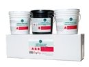
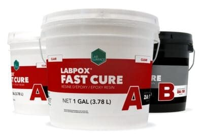
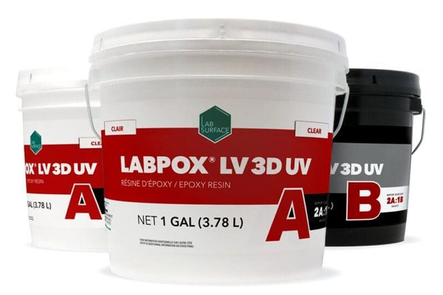
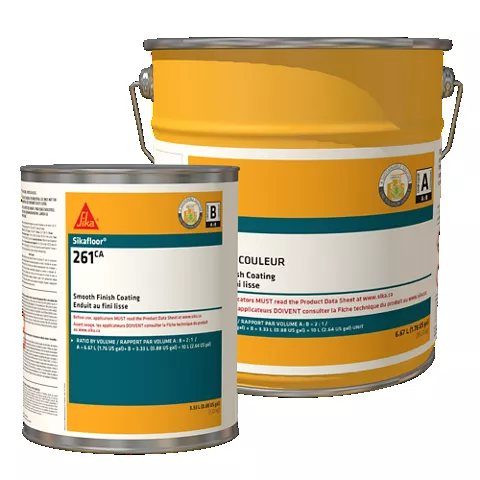
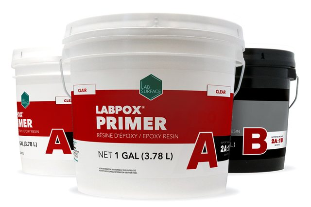
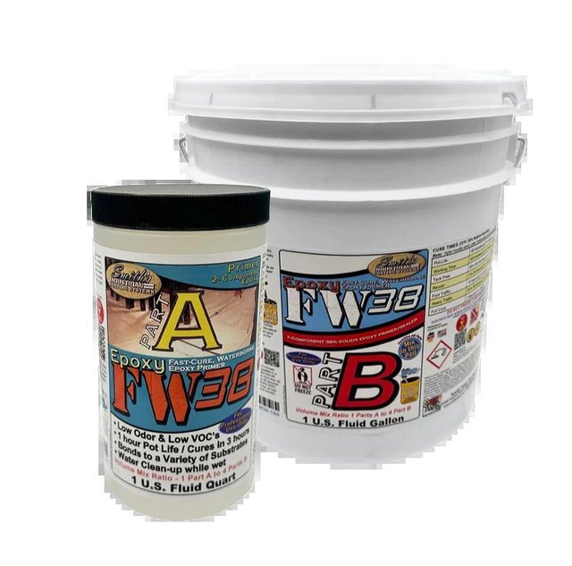
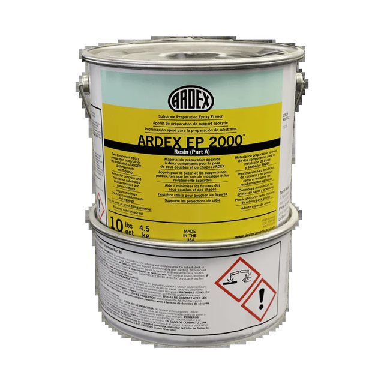

The all-round workhorse. A self-priming cycloaliphatic epoxy body or topcoat with long working time, sold in eight colours and tintable with Labsurface colour pods.
Self-priming8 stock coloursColour-pod compatible
Pros
Lowest entry price in the coating line
Long pot life, forgiving for small crews
Goes straight onto ground concrete
Strong mechanical properties for residential through industrial
Cons
Heavy-traffic areas still need Epoxy Primer first
Not sold as UV-stable, so expect ambering in sunlight
Slower return to service than Fast Cure
Best used forInterior garages, shops and basements in solid colour, or as the base coat under flake with a polyaspartic or urethane topcoat.

Labsurface · Floor coating
Labpox 40 UV
Premium3 gal · clear / super-opaque white
A 100% solids, low-VOC epoxy built to hold its colour under UV exposure. Comes in translucent clear and super-opaque white.
100% solids2A:1BUV resistantSelf-priming
Pros
Best colour retention of the epoxies here
Long pot life and working time
Works for metallic systems and light colours
Can go directly on concrete
Cons
White version must be topcoated (Aqualab PUR, Labfender, Labfast or Labshield Eco)
Costs more than Labpox 30
Only two colour options
Best used forGarages with big doors that stay open, showrooms, white or light-grey floors, and any floor that gets direct sunlight.

Labsurface · Floor coating
Labpox Fast Cure
Premium3 gal · clear, light or mid concrete
A fast-curing 100% solids epoxy for jobs where downtime is the cost that matters. Self-priming, with high mechanical strength.
100% solids2A:1BFast cureLow VOC
Pros
Rapid return to service
Fewer days of site disruption
Suited to industrial and residential floors
Cons
Faster cure means less time to work the material, especially when warm
Heavy or extreme conditions still call for Epoxy Primer
Only three colours
Best used forCommercial floors that must reopen quickly, one- or two-day garage installs, and cool shops where a standard epoxy would cure slowly.

Labsurface · Decorative coating
Labpox LV 3D UV
Premiumclear
An ultra-low-viscosity clear epoxy made for 3D metallic floors. It flows and stays workable long enough to move pigment into marbled effects.
100% solids2A:1BUltra-low viscosityUV resistant
Pros
One of the longest pot lives in the industry
High-gloss, high-clarity finish
UV resistance helps keep metallics true
Cons
Specialty product with a real learning curve
Clear only, so metallic pigments are an extra purchase
Thin and runny, so it needs a level, sealed slab
Best used forResidential and retail feature floors, basements, bars and showrooms where looks come first. Topcoat it in high-wear spots.

Sika · Floor coating
Sikafloor-261 CA
Premierkit
A glossy, high-solids, solid-colour epoxy that is self-priming and low viscosity. It also serves as primer, binder and topcoat in Sika's Morritex systems.
High solidsSilicone-freeUnlimited coloursCove base option
Pros
Big-name commercial spec product
Any colour, plus integral cove base
Good mechanical and chemical resistance
One resin covers primer, body and topcoat
Cons
Highest single price in the lineup
Rated for light to medium duty only
Kit size isn't stated on the listing, so confirm coverage first
Best used forSpecified commercial and institutional jobs (labs, back-of-house, light manufacturing) that call for Sika by name.

Labsurface · Primer
Epoxy Primer
Premium3 gal
A low-viscosity, VOC-free, 100% solids primer that soaks into concrete and anchors Labsurface coating systems.
100% solids2A:1BVOC-freeBlush resistant
Pros
Strong adhesion for heavy-duty systems
Early blush resistance
Long pot life with a fast cure
Cons
Adds a coat and a day to the job
Not a moisture barrier
Clear only; it's a foundation, not a finish
Best used forDry slabs in high-traffic or heavy-duty areas, and porous or dusty concrete before Labpox 30, 40 or Fast Cure.
Labsurface · Moisture vapour barrier
Labpox MVB Fast
Premium3 gal · 5 colours
A VOC-free epoxy vapour barrier that bonds to slabs up to 100% relative humidity. It cuts emissions from 25 to under 3 lb/1000 ft²/24 h.
RH ≤ 100%< 0.1 perm @ 16 milsRecoat in 4 h2A:1B
Pros
Stops the main cause of coating delamination
Recoatable in about 4 hours
Tinted versions can double as a base colour
Cons
Needs the full 16 mil film to hit its perm rating
Overkill on a dry, tested slab
Higher cost than a standard primer
Best used forBasements, slabs on grade without a vapour barrier, new concrete, and anywhere a moisture test fails before an epoxy or polyaspartic system.

Smith's Paints · Primer / sealer
Epoxy FW38
Basekit
A waterborne, low-odour, 38% solids epoxy primer and sealer that penetrates concrete and wood. Roll, brush or spray it with HVLP.
Waterborne38% solids1 h pot lifeFast recoat
Pros
Cheapest epoxy in the lineup
Low odour for occupied homes and offices
Works on wood as well as concrete
DIY-friendly application options
Cons
Thin film, not a wear surface on its own
One-hour pot life, so mix in small batches
No moisture-barrier rating
Best used forSealing or priming in occupied or poorly ventilated spaces, light-duty floors, and plywood or wood substrates.

Ardex · Primer
EP 2000
Premiumkit
A solvent-free, 100% solids epoxy primer for Ardex underlayments and toppings, on concrete or non-porous surfaces such as terrazzo and old epoxy.
Best used forFood and beverage plants, commercial kitchens, wash bays and vet clinics that need a sanitary cove base.
Specs come from manufacturer product information. Pros, cons and best-use notes add general epoxy practice. Tiers reflect the cost of each product's pail or kit, and package sizes differ. We confirm the right system for your slab at your free on-site quote.
Ready for a floor that lasts?
Free on-site measure and quote anywhere in Calgary and area.